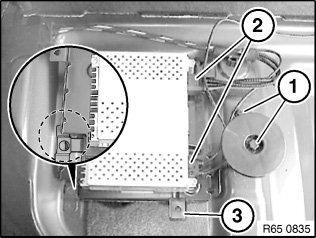
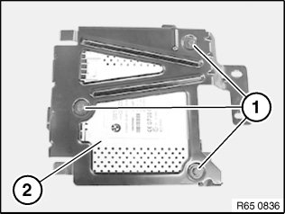
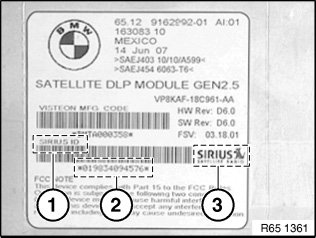

65 12 220 Removing and Installing/Replacing Satellite Radio
65 12 220 Removing And Installing/Replacing Satellite Radio (US Version Only)

IMPORTANT: Read and comply with notes on protection against electrostatic damage (ESD protection).

NOTE: Follow instructions for handling optical fibres.

Necessary preliminary tasks:
- Clamp off battery negative lead

Release screws (1).
Disconnect plug connections (2) and remove bracket with satellite radio (3).
Installation:
Bracket for satellite radio (3) must be correctly seated in the guides.

Replacement:
Release screws (1) and remove satellite radio (2).

When replacing, please observe :
Record ID number (2) of the removed device.
NOTE:
The ID number (2) can be found on the label of the housing. Above the barcode the text reads "Sirius ID" (1) and next to it is the company's logo "Sirius Satellite Radio" (3).
Record ID number (2) of the new device.

Replacement:
Carry out vehicle programming/encoding.
NOTE: Please contact Sirius. Use the ID number to cancel current device and register new one.